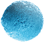

Cперматозоид (от др.-греч. σπέρμα, род. п. σπέρματος здесь «сперма» + ζωή «жизнь» + εδος «вид, облик», лат. spermatozoon, spermium) — мужская половая клетка (гамета) размножающихся посредством
оогамии организмов.
Сперматозоиды обычно обладают способностью к активному дви- жению и служат для оплодотворения женской гаметы — яйцеклетки. Обычно они значительно меньше яйцеклеток, поскольку не содержат столь значительного количества цитоплазмы и производятся орга- низмом одновременно в значительном количестве.
Типичное строение сперматозоида отражает форму общего предка животных и грибов: одноклеточный ядерный организм, передвига- ющийся за счёт жгутика в задней части, используя его подобно хвосту. Обширная группа происходящих от него организмов вклю- чает в себя животных, большинство грибов и некоторые группы протистов и называется кланом заднежгутиковых. Большинство других эукариот со жгутиками имеют их в передней части. В широком смысле слова по традиции сперматозоидами иногда на- зывают мужские половые клетки также у растений, к ним применя- ют также термины спермии или антерозоиды (их применяют также к традиционно сближавшимся с растениями грибам). https://ru.wikipedia.org/wiki/сперматозоидCперматозоид (от др.-греч. σπέρμα, род. п. σπέρματος здесь «сперма» + ζωή «жизнь» + εδος «вид, облик», лат. spermatozoon, spermium) — мужская половая клетка (гамета) размножающихся посредством
оогамии организмов.
Сперматозоиды обычно обладают способностью к активному дви- жению и служат для оплодотворения женской гаметы — яйцеклетки. Обычно они значительно меньше яйцеклеток, поскольку не содержат столь значительного количества цитоплазмы и производятся орга- низмом одновременно в значительном количестве.
Типичное строение сперматозоида отражает форму общего предка животных и грибов: одноклеточный ядерный организм, передвига- ющийся за счёт жгутика в задней части, используя его подобно хвосту. Обширная группа происходящих от него организмов вклю- чает в себя животных, большинство грибов и некоторые группы протистов и называется кланом заднежгутиковых. Большинство других эукариот со жгутиками имеют их в передней части. В широком смысле слова по традиции сперматозоидами иногда на- зывают мужские половые клетки также у растений, к ним применя- ют также термины спермии или антерозоиды (их применяют также к традиционно сближавшимся с растениями грибам). https://ru.wikipedia.org/wiki/сперматозоид
ПРИВЕТ,
ЭТО НЕ
КОММЕРЧЕСКОЕ
ЗАДАНИЕ

ТЕКСТ
СООБЩЕНИЯ
КЛЮЧЕВОЕ СООБЩЕНИЕ
BRENDXY
3 раза в день после еды. После приема препарата рекомен-дуется воздержаться от пищи и напитков в течение 1 часа
Курс лечения от 7 дней до 1 мес.
ПРЕИМУЩЕСТВА
BRENDXY